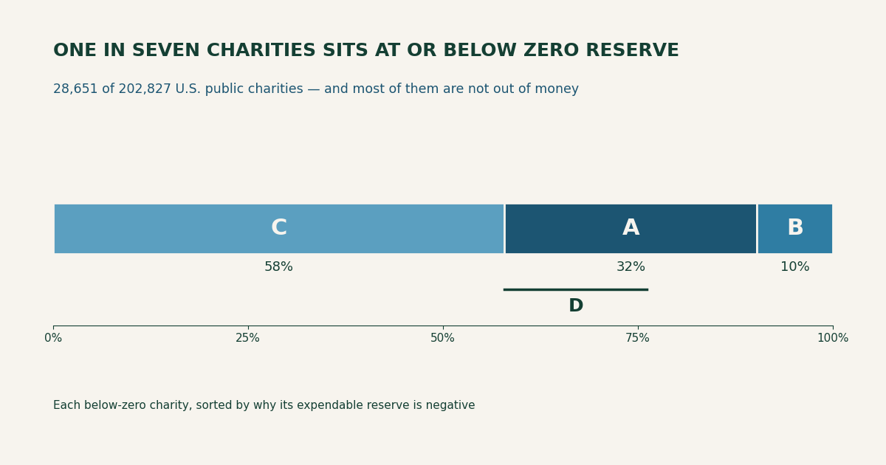
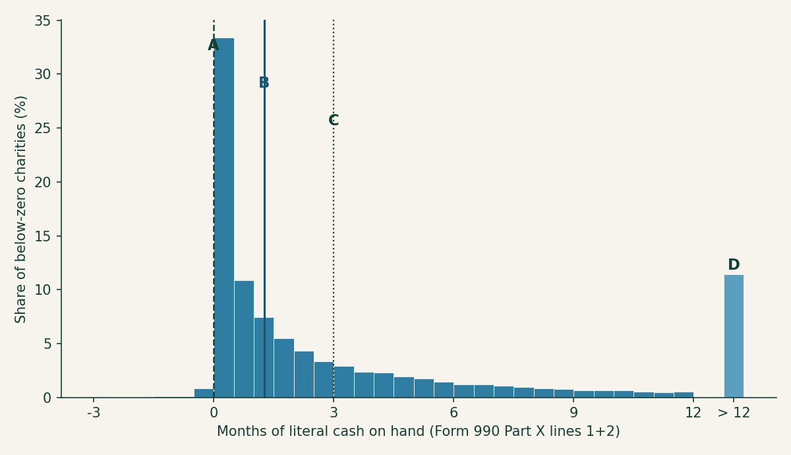
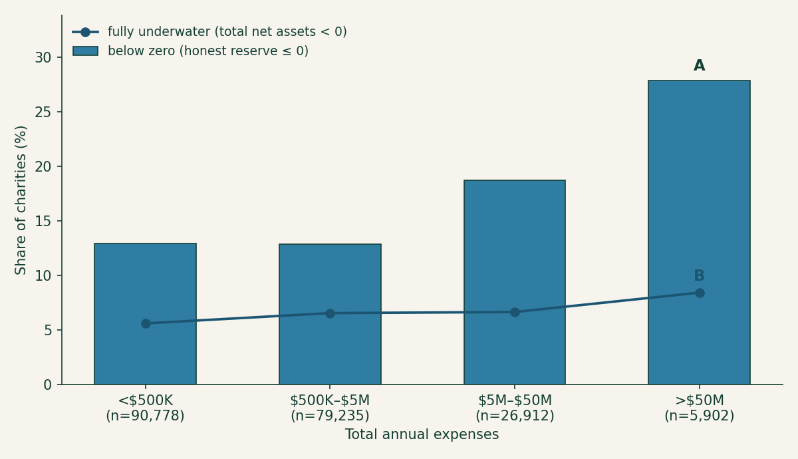

Below zero: which charities are really running on empty
The last post ran one piece of arithmetic across every Form 990 e-filed in a year and surfaced a number that reads like a mass-casualty report: 14 percent of 501(c)(3) public charities — one in seven — sit at or below zero months of operating reserve. Their buildings and equipment exceed their entire unrestricted equity, so in expendable terms they hold less than nothing. It is the kind of statistic that gets quoted as a sector-collapse headline.
It shouldn’t be. A reserve at or below zero is not the same thing as an organization out of money, and conflating the two is exactly the error the honest reserve number was built to prevent — just pointed the other way. So this post does to the scary number what the last one did to the comfortable sector average: takes it apart. The population is 28,651 charities (Figure 1). Split them by why their expendable reserve is negative and the one-in-seven headline dissolves into three very different groups, only one of which is what the headline implies.

Figure 1. The one-in-seven, decomposed. Every below-zero charity sorted by the reason its honest reserve is negative: C, asset-rich but reserve-poor (58 percent) — unrestricted equity is positive, but the value tied up in buildings and equipment is larger; A, fully underwater (32 percent) — total net assets are themselves negative; B, an unrestricted deficit that restricted funds keep total net assets positive (10 percent). Bracket D marks the genuine-distress subset within A discussed at the end. Same asset as the social card.
What the number actually counts
The honest reserve recipe starts from net assets without donor restrictions (Form 990, Part X line 27), subtracts the money sunk into land, buildings, and equipment (line 10c) because you can’t make payroll with a roof, adds back the mortgages that financed them (line 23), and divides by monthly cash expenses. A charity lands at or below zero whenever that numerator goes non-positive — and there are three arithmetically distinct ways to get there, which is the whole point.
The first, and largest, is the least alarming. A charity can carry solidly positive unrestricted net assets and still score a negative reserve simply because it owns its building. Line 27 is positive; line 10c is bigger; the subtraction goes negative. This is C in Figure 1, and it is 58 percent of the below-zero group — the majority. These organizations are not broke; their wealth is real, it is just wearing the shape of a gymnasium or a clinic or a food-bank warehouse rather than a bank balance. The honest formula is doing exactly what it should here — telling you a paid-off building is not spendable runway — but “reserve below zero” badly overstates the distress. In this group the median charity’s fixed assets run about 1.7 times its entire unrestricted equity: asset-rich, reserve-poor.
The second way is the one the headline imagines. A — 32 percent of the group, about 9,300 charities — are fully underwater: total net assets (line 33), buildings and all, are negative. Liabilities exceed everything the organization owns. That is a real balance-sheet hole, not an accounting artifact of where the money sits. The third way, B (10 percent), is a narrower case — the unrestricted fund is in deficit but donor-restricted balances keep total net assets positive, so restricted money is, on paper, subsidizing an unrestricted shortfall it legally cannot be spent on.
So one in seven is really “one in twelve owns a building the formula won’t count, plus one in twenty-two genuinely underwater, plus a sliver propped up by restricted funds.” Three stories, one bar.
Most of them still have cash
If a negative reserve were the emergency it sounds like, these organizations would be missing payroll. Overwhelmingly, they aren’t. Measuring literal cash on hand — Part X lines 1 and 2, actual cash and savings, against monthly cash expenses — 87 percent of the below-zero group hold a positive cash balance, with a median of about 1.3 months and a full third holding three months or more (Figure 2). A negative reserve and an empty checkbook are different measurements, and the gap between them is where the “sector is collapsing” reading falls apart. Most below-zero charities are doing what under-reserved organizations have always done: operating on the incoming revenue, meeting obligations as they come, thin but not stopped.

Figure 2. Liquidity of the below-zero group. Months of literal cash on hand (Part X lines 1+2 over monthly cash expenses) for the same 28,651 charities. A marks zero cash; B the median (about 1.3 months); C the three-month mark, above which roughly a third of the group still sits; D is the detached overflow bin for charities holding more than a year of cash despite a negative reserve. The reserve is underwater; the checking account, mostly, is not.
That is not a claim that a negative reserve is fine. An organization with no reserve has no cushion for a delayed grant, a bad quarter, or a roof that needs replacing — the overhead-starved condition the sector talks itself into. It is a claim that “below zero” measures fragility, not failure, and the two deserve different words.
It gets more common as charities get bigger
The below-zero rate is not spread evenly, and it runs opposite to intuition. Sorted by size, the share of charities below zero rises almost monotonically — from 13 percent of charities under $500K in expenses to 28 percent of the giants above $50M (Figure 3). The biggest institutions in the sector — the hospitals and universities — are the most likely to post a negative reserve, the same inversion the at-scale post found for the median.

Figure 3. Below-zero share climbs with size; genuine insolvency doesn’t. Bars are the share of each expense band at or below zero honest reserve (A, the $50M-plus band, at 28 percent). The overlaid line is the share fully underwater — total net assets negative (B) — and it barely moves, holding between 6 and 8 percent across every band. The rising bars are the building effect: large institutions hold enormous plant, so the reserve formula reads negative far more often even though their rate of true insolvency is flat.
That flat underwater line (B in Figure 3) is the tell. If big charities were genuinely failing more often, insolvency would climb with size too. It doesn’t — it holds near 6 to 8 percent everywhere. What climbs is the building effect: a university runs on a campus, a hospital on a plant worth billions, and the honest formula strips all of it out, so the giants trip the below-zero line on composition, not distress. (Crediting the tax-exempt bonds that finance those buildings — which the recipe doesn’t add back the way it adds back mortgages — rescues only about 7 percent of the below-zero group, so bonds explain a little of this, not most.) Because those large organizations dominate the sector’s spending, the below-zero group as a whole accounts for a striking 22 percent of all 501(c)(3) expenses — a fifth of the sector’s activity runs through charities the reserve formula flags. Almost none of that fifth is failing.
The number that should actually worry you
Strip away the buildings and the still-liquid, and a sharper figure is left. The charities that are both fully underwater (negative total net assets) and holding less than one month of literal cash — no assets to speak of and no cash either — number about 5,220. That is 2.6 percent of the sector, roughly one in forty (D in Figure 1), and it is the population where “below zero” means what the headline says. It is a real number and a serious one; it is also about a fifth the size of the scary one.
Which is the entire lesson of running this arithmetic at scale, stated twice now: a sector-wide count tells you where to look, never which organization to worry about. “One in seven below zero” is true and almost useless as a verdict on any single charity; “is this the one in forty?” is the question worth asking, and it is answerable in about four line-items. Pull a charity’s Form 990, check whether line 27 is positive (asset-rich, group C — probably fine), whether line 33 has gone negative (underwater, group A — look closer), and whether lines 1 and 2 hold any real cash. The search tools at noprofits.org line these balance-sheet figures up side by side for the organization you’re actually vetting, and the ProPublica Nonprofit Explorer shows you the filing they came from. The 990 data is already mapped and extracted; the only step left is to stop reading the sector headline as if it were about your charity, and go read your charity’s four lines instead.
This is a plain-language overview, not tax, legal, or financial advice. Figures are computed from the IRS SOI annual extract of Form 990 data (returns filed in calendar year 2024, mostly fiscal 2023), as-filed and unaudited; organizations filing the 990-EZ or 990-N are not included, and filings whose net-asset lines do not reconcile are excluded, on the same basis as the at-scale post. “Below zero” means honest operating reserve at or below zero; the analysis script (calcs/below-zero/ in this site’s repository) contains the full method. A negative reserve is a measure of fragility, not a prediction of failure, and none of this is a judgment about any individual organization.